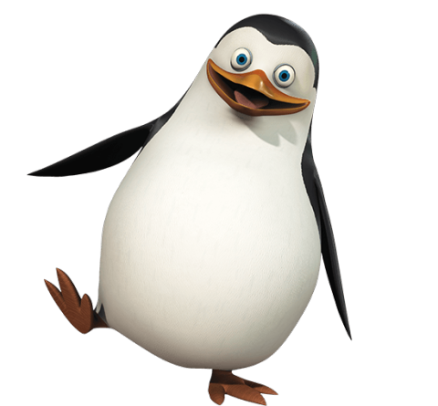

<
PrivateThePenguin
Private The Penguin!

Private is the youngest, shortest, chubbiest, the most inexperienced member of the team and he is kind of like the beginning penguin aging thing. He is one of the four main characters of Madagascar, a supporting character in Madagascar: Escape 2 Africa and Madagascar 3: Europe's Most Wanted and the main protagonist of Penguins of Madagascar: The Movie. Despite his inexperience, sometimes he is the only penguin able to resolve the main issue (episode) in the series. He is able to reach an end that has both parties in a 'win-win' situation (giving Barry a hug and making the rest Zoo forget the penguin's spying on them, even his own team). In Eclipsed, King Julien states that Private is the nicest animal in the zoo. However, he is an excellent fighter (he was easily able to defeat Skipper in a training session in The Hidden). He has light blue eyes and speaks with a British accent (which Skipper and the others calls adorably fake as stated in Hard Boiled Eggy, though Private's accent is later revealed to be genuine in A Visit From Uncle Nigel). He's the only penguin who's ever disobeyed Skipper twice in one episode. (Cute-Astrophe)